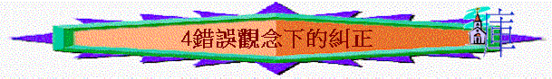

經文：摩5:18-6:14
引言(6:3)
∼6:3提到什麼事？他們有什麼看法？ 6:7提到他們此觀念與看法是否正確？
∼有沒有認識一些朋友，他們一直以為一些觀念是正確，但原來是錯誤或不合真理的？ 試分享
∼我們今天嘗試從5:18-6:14看看選民有什麼觀念是錯的，神又如何糾正他們
一.以為將來的日子---是光明的(5:18-20)
1.5:18提到他們想望什麼事？ 他們是想望耶和華的日子臨到 5:18提到想望耶和華日子，我們猜想他們一直渴望的日子是什麼的日子？ 為何他們如此渴望？ 他們以為會有什麼事情發生？ 他們心中的日子是美的、光明的、神賜福他們，審判列邦的日子
2. 5:19-20提到將來耶和華日子是怎樣？ 但神日子臨到時，人好像躲避獅子一樣驚恐，日子是沒有光明，是幽暗，是有禍的
3.「景況好像人躲避獅子又遇見熊，或是進房屋以手靠牆，就被蛇咬。」兩個比方比喻什麼共同事（即當初以為……後來卻是……）？ 不似預期，至終不能逃避禍患 為何他們有如此遭遇？ 因前文提及他們三番四次的得罪神 他們有不似預期的想法，反映他們以為自己有問題嗎？ 他們以為自己一切妥當，所以將來的日子一定是光明幸福的
4.若一位基督徒相信無論自己的靈性／信仰表現如何，他也深信神會賜福他未來的日子，一定會有平安的，你有什麼看法？
二.以為現在的敬拜---蒙悅納的(5:21-27)
1.5:21又提到什麼事？ 5:21-23提及他們有什麼宗教活動？ 節期、嚴肅會、獻祭、歌唱、彈琴 嚴肅會指什麼? 聚會 (分別為聖的或節期的聚會
2.5:22他們在聚會中獻上什麼祭？ 燔祭、素祭、平安祭
3.5:21-23神如何回應他們的宗教或敬拜生活，用了什麼字眼？ 不悅納、不顧、不喜歡、不看、不聽 這些字眼可總結為神怎樣看他們的敬拜生活？ 他們的宗教生活神不悅納
4.5:24提及什麼事情？ 從這節中，我們可否看到神不悅納他們眾多的敬拜生活之原因？ 他們的生命沒有公平、公義，所以他們的敬拜，神也不悅納
5.5:25-26又指出他們有什麼問題？ 5:26也可譯譯「所以你們將要抬著你們的王「索古特」和你們的偶像「克完」，就是你們的星神，是你們為自己所造的」索古特是亞述的戰神，克完是亞述的土星神，即他們的祭物至終是給誰？ 偶像及假神
6.5:27「大馬色以外」是指亞述地，5:27提到最終他們有什麼結果？神要將他們擄至亞述去
7.你心目中認為蒙神悅納的敬拜生活應是怎樣的？ 試分享
三.以為降禍的日子----甚遙遠的(6:1-12)
1.6:1-2又講到什麼事？ 「甲尼」、「哈馬」是以色列北部亞蘭之城巿，「迦特」是南面非利巿之城，即從南至北，以色列與列國比較是怎樣？從南至北，也找不到一個國家像以色列般強大
2.6:3又提到他們有什麼另外的觀念？ 6:3-6提到他們的生活又如何？
百姓盡情吃喝玩樂，也行強暴的事，但過著無憂慮的生活3. 6:6提及「約瑟的苦難」，約瑟在過往有什麼苦難？ 同以色列人將面對什麼事有關？ 「約瑟的苦難」約瑟曾被賣下埃及為奴，以色列人也將被擄至亞述為奴 你認為6:3的觀念如何影響他們的生活表現？ 他們以為降禍的日子還遠，神不會審判他們，所以過著放盪而不儆醒的生活
4.你認為今天的基督徒，應有什麼觀念，可令自己更能在世過一個儆醒的生活？
5.6:7-11又提到他們將來是否能安逸？ 有什麼慘況出現？ 安逸的人被被擄、剩下的人被殺、大小屋被破
6.6:12又提到「馬豈能在崖石上奔跑？人豈能在那裡用牛耕種呢？」的比喻，「人豈能在那�堨峇�耕種」有譯「人豈能用牛在海�堹挹堜O」，馬應在那裡奔跑？ 人用牛在那裡耕種？ 若改變為在崖石、在海裡，你即時有什麼感覺？ 荒謬不合理的事
7. 6:12提到苦膽、茵蔯是什麼東西？ 有什麼特質？苦膽可能這是一種像黃瓜的蔓藤，結橘色的果實。果實內有柔軟的果肉，味苦有毒，茵蔯是植物，味道極苦
「你們卻使公平變為苦膽，使公義的果子變為茵蔯。」是什麼意思？
以色列人卻扭曲了美善的公平、公義，變了質，令人受不公平不公義的對待，是令人極苦的事
為何用「馬豈能在崖石上奔跑？人豈能在那裡用牛耕種呢？」比喻，兩者有什麼共通關係？ 同樣是扭曲，同樣是不合理的事
四. 以為憑自己力量----可勝列國(6:13-14)
1. 6:13提及角，在舊約的世界中，「角」指世界強國的力量，即6:11指出他們有什麼問題？ 以為憑自己的力量可打跨強國、自誇
2. 6:14提及神對他們有什麼回應？ 神卻興起一國將自誇的選民擊倒；「哈瑪」「亞拉巴」分別為北國的南北邊界。
3.有沒有見過一些肢體/朋友很自負及自誇的，試分享
總結:
以色列人有什麼錯誤的觀念？
今天查經對你有什麼提醒與得著?
祈禱